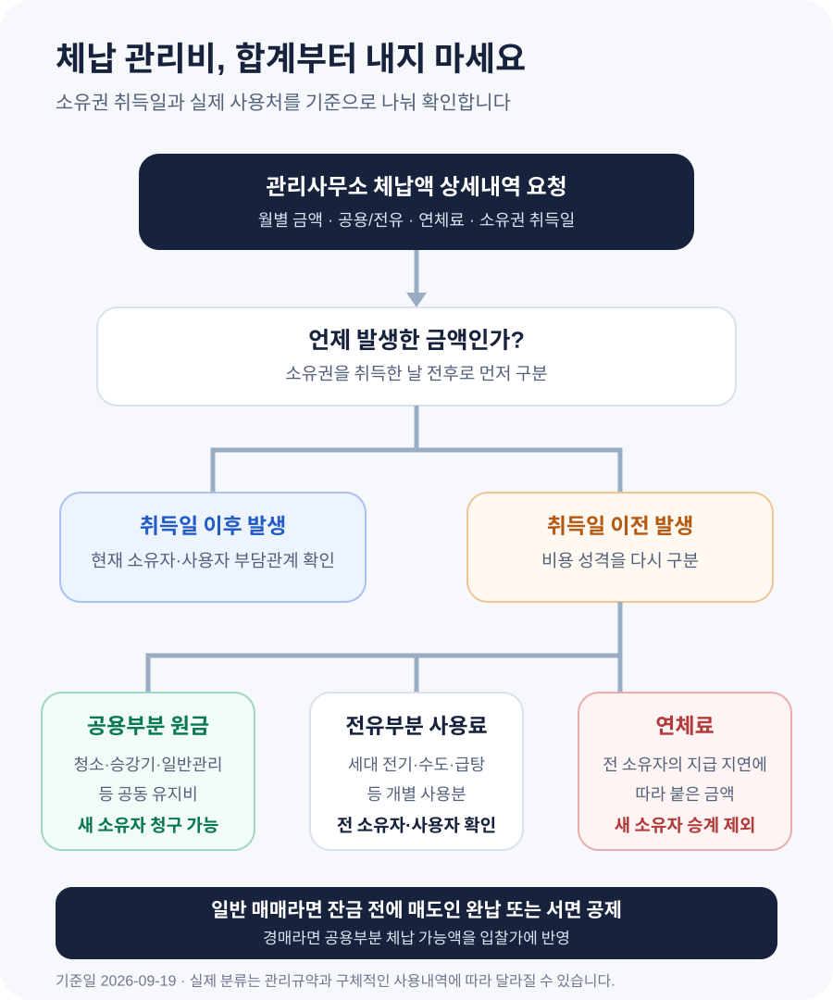

아파트를 샀는데 전 주인 체납 관리비까지 내야 할까?
전 주인의 체납 관리비 전부를 새 소유자가 내는 것은 아닙니다. 다만 승강기·청소·일반관리처럼 공동으로 건물을 유지하는 데 든 공용부분 관리비는 새 소유자에게도 청구될 수 있습니다. 세대에서 쓴 전기·수도·급탕 같은 전유부분 관리비와 전 주인이 늦게 내서 붙은 연체료까지 그대로 넘겨받는 것은 아닙니다. 관리사무소에서 항목별 내역을 받고, 일반 매매라면 잔금 전에 매도인이 정산하게 만드는 것이 가장 안전합니다.
공용부분 관리비는 집의 새 소유자에게도 청구될 수 있습니다
집을 사고 관리사무소에 전입을 알렸는데 “전 주인이 관리비를 몇 달 밀렸으니 먼저 내야 한다”는 말을 들으면 억울할 수 있습니다. 내가 쓰지도 않은 전기료와 난방비까지 왜 내야 하느냐는 생각이 먼저 듭니다. 결론은 관리비의 성격에 따라 다릅니다.
집합건물법 제18조는 공유자가 공용부분에 관해 다른 공유자에게 가진 채권을 그 특별승계인에게도 행사할 수 있다고 정합니다. 아파트를 매수하거나 경매로 낙찰받아 소유권을 취득한 사람은 전 소유자의 ‘특별승계인’에 해당할 수 있습니다.
대법원은 2001다8677 전원합의체 판결에서 전 소유자의 체납 관리비를 새 소유자에게 승계시키는 관리규약은 공용부분 관리비에 한해 유효하다고 판단했습니다. 공용부분은 모든 소유자가 함께 유지해야 하므로, 그 비용채권을 새 소유자에게도 행사할 수 있도록 보호할 필요가 있다는 이유입니다.
여기서 “새 소유자가 관리사무소에 낼 수 있다”는 것과 “최종적으로 전 주인 대신 손해를 떠안아야 한다”는 것은 다른 문제입니다. 판례는 새 소유자가 납부한 뒤 전 소유자에게 구상할 수 있다고 설명합니다. 그러나 실제로 돈을 돌려받는 데는 시간과 비용이 들 수 있으므로, 일반 매매에서는 잔금 전에 정산하는 편이 훨씬 낫습니다.
고지서 이름보다 실제 사용처로 공용부분과 전유부분을 나눕니다
관리사무소가 보낸 ‘체납액 합계’만으로 부담 범위를 정할 수 없습니다. 대법원 2004다3598·3604 판결은 공용부분 관리비인지 여부를 개별 항목의 성질과 구체적인 사용내역으로 판단해야 한다고 했습니다.
| 구분 | 대표적인 항목 | 새 소유자에게 청구될 수 있나 |
|---|---|---|
| 공용부분 | 일반관리비, 공용 청소·소독, 승강기 유지, 화재보험, 공용 수선유지비 등 | 항목의 실제 성격이 공동 유지비라면 가능 |
| 전유부분 | 세대 전기·수도·하수도, 개별 급탕, TV 수신료 등 | 전 소유자·사용자의 개인 사용분은 원칙적으로 제외 |
| 연체료 | 전 소유자가 늦게 내서 붙은 가산금 | 공용부분 원금과 달리 새 소유자에게 승계되지 않음 |
| 취득 후 발생분 | 새 소유권 취득 뒤 부과된 관리비 | 현재 소유자·사용자의 계약관계에 따라 부담 |
표의 항목은 이해를 위한 대표 사례입니다. ‘일반관리비’처럼 세대와 공용부를 함께 관리하는 비용도 입주자 전체의 공동 이익을 위해 일률적으로 지출됐다면 공용부분으로 인정될 수 있습니다. 반대로 중앙난방이라는 이유만으로 무조건 공용부분이 되는 것도 아닙니다. 한 하급심 사례에서는 세대별 난방비가 실제로 개별 세대의 이익을 위한 비용이라 전유부분으로 판단됐습니다.
따라서 관리사무소에 공용·전유·연체료를 나눈 월별 내역과 분류 근거를 요청하세요. 고지서의 제목만 바꿔 적은 표가 아니라, 관리규약과 실제 사용처에 따라 어떻게 나눴는지 확인해야 합니다.
체납액 250만원 전부가 매수인 몫은 아닙니다
다음은 확인 순서를 보여 주기 위한 계산 예시입니다. 실제 항목 분류는 해당 단지의 관리규약과 사용내역을 기준으로 판단해야 합니다.
| 관리사무소 청구내역 | 금액 | 우선 확인할 상대 |
|---|---|---|
| 공용 청소·승강기·일반관리비 | 1,300,000원 | 새 소유자에게 청구 가능성이 있는 원금 |
| 세대 전기·수도·급탕 사용료 | 700,000원 | 전 소유자 또는 당시 사용자 |
| 기존 체납액에 붙은 연체료 | 500,000원 | 전 소유자 |
| 합계 | 2,500,000원 | 합계를 그대로 승계한다고 단정하지 않음 |
이 사례라면 먼저 검토할 금액은 공용부분 원금 130만원입니다. 세대 사용료 70만원과 전 주인의 연체료 50만원까지 한꺼번에 “새 주인 부담”이라고 처리해서는 안 됩니다. 다만 공용부분으로 표시된 130만원도 명칭만 보고 확정하지 말고 월별 산출근거를 확인해야 합니다.

일반 매매라면 잔금 송금 전에 매도인이 정산하게 만드세요
일반 매매는 매도인과 잔금 정산을 할 수 있다는 점에서 경매보다 대응이 쉽습니다. 계약 전에 관리사무소에 전화해 체납 여부를 확인하고, 잔금일 직전에 발급한 납부확인서나 미납내역을 다시 받으세요. 개인정보를 이유로 매수인에게 금액을 바로 알려주기 어렵다고 하면 매도인이 직접 발급해 제출하도록 계약 조건에 넣습니다.
- 계약 전 — 체납 여부, 기준일, 공용·전유·연체료 구분이 가능한지 관리사무소에 묻습니다.
- 특약 — 소유권 이전일 이전에 발생한 관리비와 사용료는 매도인이 잔금일까지 완납하고 증빙을 준다고 적습니다.
- 잔금 전 — 당일 또는 직전 영업일 기준 미납내역과 납부영수증을 확인합니다.
- 미납 발견 — 매도인이 즉시 납부하거나, 당사자 합의 아래 미납액을 잔금에서 공제해 관리사무소에 지급합니다.
- 계량기 정산 — 전기·수도·가스 검침값과 소유권 이전 시점을 사진과 정산표로 남깁니다.
잔금에서 임의로 빼면 계약 불이행 다툼이 생길 수 있으므로, 공제할 금액과 지급처를 매도인·매수인·중개사가 확인한 정산표나 합의서로 남기세요. “관리비는 매도인 부담”이라는 짧은 특약보다 기준일, 완납증명, 미납 시 처리 방법을 구체적으로 적는 편이 안전합니다.
매도인이 “세입자가 안 낸 돈”이라고 해도 매수인의 확인 필요성이 사라지지는 않습니다. 관리사무소가 공용부분 체납액을 새 소유자에게 청구할 수 있기 때문입니다. 매도인과 기존 세입자 사이의 최종 부담 문제는 별도로 정산하게 하고, 매수인은 잔금 전에 체납이 남지 않도록 확인하세요.
경매는 공용부분 체납액을 입찰가에 반영해야 합니다
경매는 전 소유자에게 잔금일 완납을 요구하기 어렵습니다. 그래서 입찰 전에 관리사무소나 관리단에 체납 기간과 총액을 문의하고, 공용부분·전유부분·연체료를 구분한 내역을 받을 수 있는지 확인해야 합니다. 관리사무소가 개인정보 등을 이유로 상세내역 제공을 제한할 수 있으므로, 현황조사서와 매각물건명세서만 믿지 말고 가능한 범위에서 직접 확인합니다.
공용부분 관리비가 300만원이라면 낙찰대금 외에 300만원이 더 들 수 있다는 전제로 수익성을 계산해야 합니다. 총 체납액 700만원을 전부 인수한다고 과대평가할 필요도 없지만, “전 주인 빚이니 0원”이라고 보는 것도 위험합니다. 오래된 체납분은 소멸시효 완성 여부가 문제 될 수 있으나, 청구·승인·재판 등으로 시효가 달라질 수 있으므로 금액을 임의로 제외하지 말고 납부 의무를 확인하세요.
소유권을 넘겨받은 뒤 알았다면 상세내역부터 서면으로 요청합니다
이미 입주한 뒤 청구서를 받았다면 전액 납부나 전액 거부부터 하지 마세요. 관리사무소에 소유권 취득일 전후, 월별 공용부분 원금, 전유부분 사용료와 연체료를 구분한 내역을 서면으로 요청합니다. 현재 내가 사용한 관리비는 별도로 정상 납부해 새 체납이 쌓이지 않게 합니다.
공용부분 원금 중 다툼 없는 금액을 납부한다면 영수증에 대상 기간과 항목이 나타나게 하고, 전유부분·연체료까지 포함된 합계에 동의한 것으로 오해받지 않도록 이의 내용을 함께 남기세요. ‘체납액 전부를 인수한다’는 확인서나 분할납부 약정에 서명하기 전에는 항목이 정확한지 확인해야 합니다.
일반 매매에서 매수인이 공용부분 체납액을 대신 냈다면 매매계약 특약과 정산자료를 근거로 매도인에게 반환을 요구할 수 있습니다. 대법원 2001다8677 판결도 새 소유자가 전 소유자에게 구상할 수 있음을 언급합니다. 먼저 지급 요청과 기한을 문자·내용증명 등 기록이 남는 방식으로 보내고, 금액이 크거나 계약 해석이 다투어지면 법률상담을 받으세요.
전 주인의 체납을 이유로 곧바로 단전·단수를 이어 갈 수는 없습니다
관리사무소가 체납액을 전부 내기 전에는 전기·수도나 승강기를 쓰게 할 수 없다고 말하는 경우도 있습니다. 그러나 새 소유자가 공용부분 관리비를 부담할 수 있다는 사실만으로 전 소유자 때부터 하던 사용 제한이 자동으로 정당해지는 것은 아닙니다.
대법원 2004다3598·3604 판결은 새 소유자가 전 주인의 연체로 생긴 법률효과까지 그대로 승계하는 것은 아니므로, 소유권을 취득했다는 이유만으로 종전의 단전·단수와 승강기 정지를 계속한 조치는 불법행위가 될 수 있다고 판단했습니다. 다만 모든 사용 제한이 무조건 불법이라는 뜻은 아닙니다. 관리규약, 통지, 체납 경위와 제한 방법 등을 종합해 판단합니다.
사용 제한 통보를 받으면 체납 상세내역과 관리규약의 근거 조항을 요구하고, 현재 관리비는 정상 납부하면서 전 소유자분에 대한 이의와 협의 요청을 서면으로 남기세요. 생활에 중대한 지장이 예상되거나 실제로 제한됐다면 관리사무소와 감정적으로 다투기보다 즉시 법률상담을 받는 편이 안전합니다.
자주 헷갈리는 질문
‘공용관리비’라고 적혀 있으면 무조건 내야 하나요?
명칭만으로 확정되지 않습니다. 실제로 입주자 전체의 공동 이익을 위해 건물을 통일적으로 유지·관리하는 데 쓰였는지를 봅니다. 월별 항목과 사용처, 관리규약을 요청하세요.
연체료도 공용관리비에 붙은 것이면 같이 내야 하나요?
대법원은 연체료를 전 소유자의 지연에 대한 위약벌 성격으로 보고 새 소유자에게 승계되는 공용부분 관리비에 포함하지 않았습니다. 원금과 연체료를 분리한 내역을 받으세요.
관리비가 3년 넘었으면 무조건 사라지나요?
월 단위 관리비 채권은 3년의 단기소멸시효가 문제 될 수 있지만, 3년이 지났다는 이유만으로 자동 삭제된다고 단정할 수 없습니다. 청구·재판·채무 승인 등 구체적인 경위에 따라 시효 완성 여부가 달라질 수 있으므로 오래된 금액은 기간과 법적 조치 이력을 확인해야 합니다.
오피스텔이나 상가도 같은가요?
구분소유 형태의 집합건물이라면 집합건물법과 관련 판례가 적용될 수 있습니다. 다만 관리단·관리규약, 임대차 관계와 관리비 항목이 아파트와 다를 수 있으므로 해당 건물 자료를 기준으로 판단해야 합니다.
잔금 전후 체크리스트
- □ 관리사무소에서 잔금일 직전 기준 체납 여부를 확인했다.
- □ 월별 체납액을 공용부분·전유부분·연체료로 나눈 내역을 요청했다.
- □ 소유권 취득일 이전 관리비를 매도인이 완납한다는 특약을 넣었다.
- □ 미납액을 잔금에서 처리한다면 매도인 동의와 지급처를 정산표에 남겼다.
- □ 전기·수도·가스 계량기와 인도 시점을 사진으로 기록했다.
- □ 완납영수증 또는 관리비 납부확인서를 보관했다.
- □ 취득 뒤 청구를 받으면 현재 관리비와 전 소유자 체납액을 섞지 않았다.
- □ 다툼 없는 공용부분을 납부할 때 대상 기간·항목이 적힌 영수증을 받았다.
- □ 전유부분·연체료에 대한 이의는 기록이 남는 방식으로 전달했다.
공식 자료
- 국가법령정보센터 — 집합건물법 제18조(공용부분에 관하여 발생한 채권의 효력)
- 대법원 2001. 9. 20. 선고 2001다8677 전원합의체 판결
- 대법원 2006. 6. 29. 선고 2004다3598·3604 판결
- 의정부지방법원 2007. 7. 18. 선고 2007가단1457 판결 — 항목별 판단 사례
- 국가법령정보센터 중앙부처 법령해석 — 특별승계인에게 승계되는 관리비 범위
정보 기준일: 2026-09-19. 이 글은 일반적인 아파트·집합건물 매수와 경매를 위한 정보입니다. 실제 지급 의무는 관리규약의 효력, 각 비용의 사용처, 체납 기간, 소유권 취득일, 매매계약 특약과 소멸시효 진행 상황에 따라 달라질 수 있습니다. 큰 금액이나 단전·단수 분쟁은 자료를 갖춰 전문가에게 개별 검토를 받으세요.
잔금 전에 함께 확인하세요
- 잔금일 정산 계산기관리비·선수관리비 등 잔금일 정산 항목 계산
- 매매 잔금일 체크리스트송금 전 권리·서류·현장 인도 확인